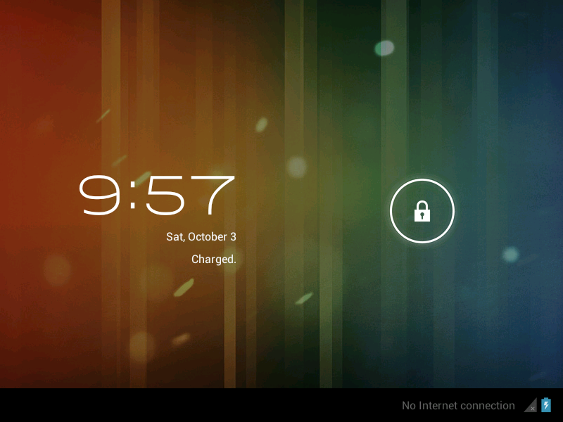

Android 4.0 “Ice Cream Sandwich” — a real VM, streamed to your browser.

The actual guest, booted by DroidBox: Android 4.0 lock screen at 800×600.
DroidBox boots a genuine x86 build of Android 4.0 (the Android-x86 / OSBoxes 4.0-R1 image) under QEMU and streams the display to a full-window, touch-friendly browser canvas using VNC over WebSocket (noVNC). It is not a skin or a simulator theme — it is the real 2011 operating system, Holo UI and all, running on your own machine.
git clone https://github.com/kooliros14/droidbox.git
cd droidbox
./run.sh
Then open http://localhost:8080. The first run downloads
the guest image (~145 MB, SHA-256 verified), builds the base disk,
and boots Android; later runs go straight to booting. Requirements:
Python 3, QEMU, and 7z — run.sh installs them via apt or
Homebrew when it can. Linux, macOS, or Windows via WSL2.
QEMU runs the VM with direct kernel boot and a fresh disposable overlay disk per boot. KVM on Linux and HVF on macOS are used automatically when available; TCG software emulation otherwise.
A stdlib-only Python server serves the UI, a small JSON API, and the WebSocket→VNC bridge on a single port. No dependencies to pip install, no accounts, no cloud.
The browser client fills the window; taps, drags, and clicks map to the guest pointer, with on-screen Back / Home / Menu keys.
GitHub Pages hosts static sites only, and an emulator needs a live backend — QEMU can't run inside a web page. So this page is the project's home; the emulator itself runs on your machine with the one command above.